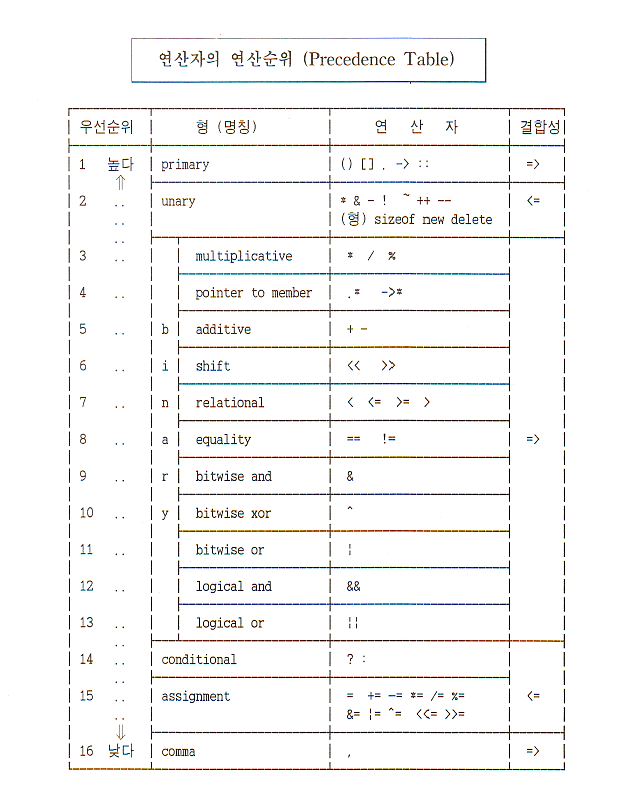

목차
| C/C++ |
|
|---|---|
| C++ |
|
피연산자 수에 따라
표기법에 따라
가환연산자(*, +, &, |, ^) 주의사항
사용자가 괄호를 하여도 compiler가 임의로 재배치하여 평가하므로 side effect가 유발할 우려가 있다.
%의 오퍼랜드는 정수형태
정수/정수는 결과도 정수이다.
|
int a, b, c, d; a = 2; b = -3; c = 7; d = -19; |
|
수식 |
연산 우선순위와 결합성 |
수식의 결과 |
|---|---|---|
|
a/b c/b/a c%a a%b d/b%a -a*d a%-b*c 9/c+-20/d -d%c-b/a*5+5 7-a%(3+b) |
a/b (c/b)/a c%a a%b (d/b)%a (-a)*d (a%(-b)) * c (9/c)+((-20)/d) (((-d)%c)-((b/a)*5))+5 7-(a%(3+b)) |
0 -1 1 기종에 의존적, (2) 0 38 14 2 15 오류 |
오퍼랜드는 좌변값(lvalue)을 갖는 산술형 데이터
부작용(side effect)에 주의해야 한다.
전위형(prefix)
후위형(Postfix)
|
good = 0; better = 0; best = 0; |
best = better = good = 0; |
|
good = 0; better = good + 1; best = better + 2; |
best = (better=(goo=0)+1) + 2 |
|
a = a + 1; b = b - 2; c = c * 3; d = d / 4; e = e % 5; |
a += 1; b -= 2; c *= 3; d /= 4; e %= 5; |
|
int i, j, k, m, n; i = j = k = m = n = 3; |
|
수식 |
연산 우선순위와 결합성 |
수식의 결과 |
|---|---|---|
|
i += ++j + 3 k %= m = 1 + n / 2 1 + 3 * n += 7 / 5 1 + 3 * (n += 7) /5 |
i = (i + ((++j) + 3)) k = (k % (m = (1 + n / 2))) (1 + (3 * n)) += (7 / 5) 1 + (3 * (n = (n + 7)) / 5) |
10 1 에러 7 |
|
char c = 'w'; int i = 1, j = 2, k = -7; double x = 7e+33, y = 0.1; |
|
수식 |
연산 우선순위와 결합성 |
수식의 결과 |
|---|---|---|
|
'a' + 1 < c -i-5*j >= k+1 3 < j < 5 x-3.333 <= x+y x < x+y |
('a'+1) < c ((-i)-(5*j)) >= (k+1) (3 < j) < 5 (x-3.333) <= (x+y) x < (x+y) |
1 0 1 1 0 |
|
char c = 'w'; int i = 1, j = 2, k = -7; double x = 7e+33, y = 0.1; |
|
수식 |
연산 우선순위와 결합성 |
수식의 결과 |
|---|---|---|
|
'v' == c-1 i+j+k == -2 * j k == j-9 == i x+y != x*y x != x + y 1 < 2 == 3 < 4 |
'v' == (c-1) ((i+j)+k) == ((-2)*j) (k == (i-9)) == i (x+y) != (x*y) x != (x+y) (1 < 2) == (3 , 4) |
1 1 1 1 0 1 |
|
char c = 'M'; int i = 7, j = 7; double x = 0.0, y = 2.3; |
|
수식 |
연산 우선순위와 결합성 |
수식의 결 |
|---|---|---|
|
!c !(i - j) !i - j ! - i - j x * !j !x * !j x / !j x / !!j !!x !!!x |
!c !(i - j) (!i) - j (!(- i)) - j x * (!j) (!x) * (!j) x / (!j) x / ((!(!j)) !(!x) !(!(!x)) |
0 1 -7 -7 0.0 0 에러 0.0 0 1 |
| expr1 expr2 | expr1 && exp2 | expr1 || expr2 |
|---|---|---|
| 거짓(zero) 거짓(zero) | 0 | 0 |
| 거짓(zero) 참(nonzero) | 0 | 1 |
| 참(nonzero) 거짓(zero) | 0 | 1 |
| 참(nonzero) 참(nonzero) | 1 | 1 |
|
char c = 'w'; int i = 3, j = 3, k = 3; double x = 0.0, y = 2.3; |
|
수식 |
연산 우선순위와 결합성 |
수식의 결 |
|---|---|---|
|
i && j && k x && j || j -3 x || i && j-3 i<j && x<y i<j || x<y i==j && x<=y x!=y && j+1==!k+4 'A'<=c && c<='Z' c-1 == 'v' || c+1 == 'v' i==2 || j==4 || k==6 |
i && j && k x && j || j -3 x || i && j-3 i<j && x<y i<j || x<y i==j && x<=y x!=y && j+1==!k+4 'A'<=c && c<='Z' c-1 == 'v' || c+1 == 'v' i==2 || j==4 || k==6 |
1 0 0 0 1 1 1 0 1 0 |
| x y | x & y | x | y | x ^ y | ~x |
|---|---|---|---|---|
|
0 0 1 0 0 1 1 1 |
0 0 0 1 |
0 1 1 1 |
0 1 1 0 |
1 0 1 0 |
| 원래상태 | 3칸 우측 이동 | 3칸 좌측 이동 |
|---|---|---|
|
16 : 0000000000010000 -16 : 1111111111110000 65513: 1111111111101001 |
0000000000000010 1111111111111110 0001111111111101 |
0000000010000000 1111111110000000 1111111101001000 |
|
if (x > y) max = x; else max = y; |
max = (x > y) ? x : y; |
|
a = a + 1; b = b + 1; c = c + 1; |
= |
(a=a+1, b=b+1, c=c+1); (a++, b++, c++); |
|
a = a + 1; b = b + a; c = c + b; |
= |
(a=a+1, b=b+a, c=c+b); (a++, b+=a, c+=b); |

다음 조건을 나타내는 식을 코딩하라
k는 1과 9 사이에 있지 않다.
4로 나누어지면서 100으로는 나누어지지 않거나 400으로 나누어지는 해는 윤년이다. year를 입력받아 윤년이면 1을 아니면 0을 출력하는 프로그램을 작성하라.
주소연산자와 포인터 변수를 사용하여 a변수에 45, b변수에 50을 대입하여 a + b를 구하는 프로그램을 작성하라.